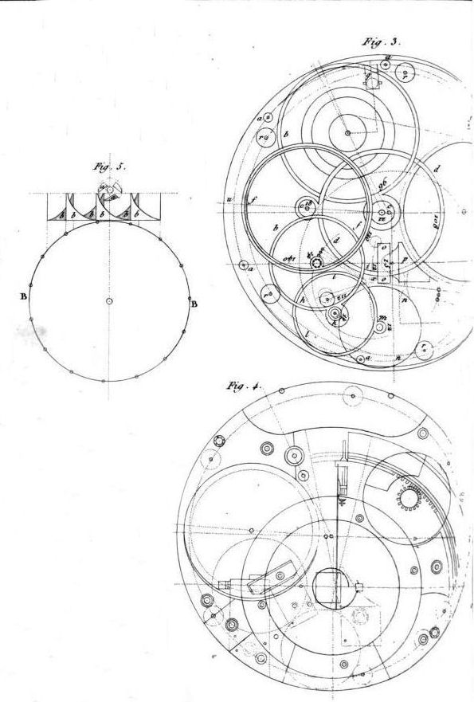

mkaestatic
contact
example
readme
example
Here is an design sketch of the H4 chronometer by John Harrison

Footer
We can also have a menu of blog entries which is generated in the template:
My first blog post
My second blog post